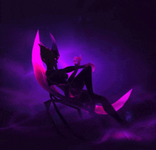

O grze
Mecze w grze League of Legends odbywają się na mapie Summoner’s Rift. Głównym celem rozgrywki, w której uczestniczą dwie drużyny składające się z pięciu graczy, jest zniszczenie struktury zwanej Nexusem w bazie przeciwnika. W pobliżu Nexusa znajduje się fontanna, z której bohaterowie rozpoczynają grę oraz do której wracają, aby uzupełnić punkty życia, manę i nabyć przedmioty w sklepie.

Mapa składa się z trzech głównych ścieżek, prowadzących do bazy przeciwnika. Każda aleja jest chroniona przez trzy wieże obronne oraz inhibitor, a w bezpośrednim sąsiedztwie Nexusa znajdują się dodatkowe dwie wieże. Dżungla, obszar pomiędzy alejami, zawiera neutralne potwory oraz rośliny. Potwory, takie jak smoki żywiołów, Starszy Smok oraz Baron Nashor, są potężne i mają szczególne znaczenie w grze. Po ich pokonaniu drużyna otrzymuje znaczące wzmocnienie.
W grze wyróżnia się pięć głównych pozycji, które tworzą zalecaną kompozycję drużyny: górną aleję, dżunglę, środkową aleję, dolną aleję oraz wsparcie. Każdy gracz wybiera bohatera przypisanego do jednej z pozycji, a podczas rozgrywki postać zdobywa doświadczenie, które pozwala awansować na wyższe poziomy i rozwijać umiejętności. Gracze zdobywają również złoto, które można przeznaczyć na zakup przedmiotów zwiększających statystyki postaci[11]. Udostępniono ponad 160 bohaterów, z których każdy ma wyjątkowy zestaw umiejętności
W 2013 r. wprowadzono tryb All Random All Mid (ARAM) rozgrywany na mapie Howling Abyss, która zawiera tylko jedną aleję. W przeciwieństwie do rozgrywki na Summoner’s Rift, gracz otrzymuje wyłącznie losową postać spośród dostępnych dla niego. Celem nadal jest zniszczenie Nexusa drużyny przeciwnej, jednak rozgrywka koncentruje się głównie na walce. Aby bohater mógł zakupić przedmioty, musi zginąć, ponieważ powrót do bazy jest wyłączony[13]. W przedsezonie 2022 r. zmodyfikowano mapę: wprowadzono hexbramy umożliwiające szybszy powrót, wypełniono pustą przestrzeń przy prawej krawędzi alei, a wieże które ulegną zniszczeniu, przewracają się, tworząc nową strukturę[14]. Część zmian została wycofana po krytyce ze strony graczy